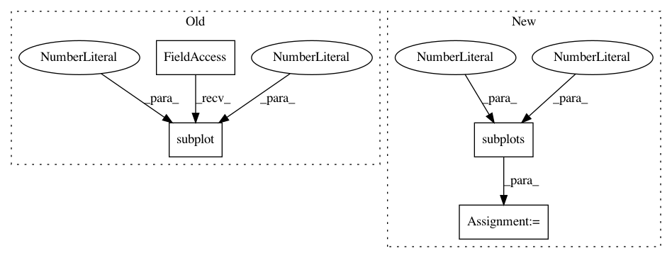

21339f4cbbe3988edfe24b28a91af2278b7a3382,doc/source/plots/hough_tf.py,,,#,7
Before Change
out, angles, d = hough_line(img)
plt.subplot(1, 2, 1)
plt.imshow(img, cmap=plt.cm.gray)
plt.title("Input image")
After Change
out, angles, d = hough_line(img)
fix, axes = plt.subplots(1, 2, figsize=(7, 4))
axes[0].imshow(img, cmap=plt.cm.gray)
axes[0].set_title("Input image")
In pattern: SUPERPATTERN
Frequency: 3
Non-data size: 4
Instances
Project Name: scikit-image/scikit-image
Commit Name: 21339f4cbbe3988edfe24b28a91af2278b7a3382
Time: 2016-09-05
Author: multicolor.mood@gmail.com
File Name: doc/source/plots/hough_tf.py
Class Name:
Method Name:
Project Name: scikit-learn/scikit-learn
Commit Name: e650a207efc9dd33556b1b9678b043f73a18aecb
Time: 2019-11-14
Author: thomasjpfan@gmail.com
File Name: examples/classification/plot_digits_classification.py
Class Name:
Method Name:
Project Name: scikit-learn/scikit-learn
Commit Name: b4db36d337a4ff83f1bcb37c5a8c615d3134d372
Time: 2020-05-20
Author: jliu176@gmail.com
File Name: examples/covariance/plot_mahalanobis_distances.py
Class Name:
Method Name: